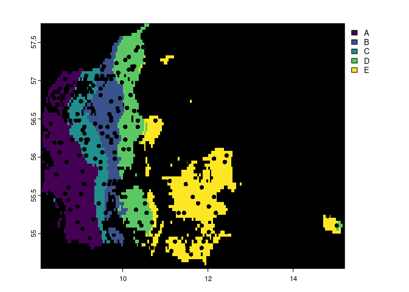

Installation
You can install the released version of GeoStratR from CRAN with:
install.packages("GeoStratR")And the development version from GitHub with:
# install.packages("devtools")
devtools::install_github("Sustainscapes/GeoStratR")The goal of this package is to Stratify spatial areas based on raster and then generate stratified random sampling schemes for such strata, as an example we will show how to generate a stratified sampling scheme for Denmark based on for bioclimatic variables, for this we will use the internall dataset bios, as can be seen in the next figure:
plot(Bios)Optimal strata
To stratify we can use the function Stratify, which automatically determines the optimal number of classes by evaluating a range of possible groupings. This function performs k-means clustering on the raster stack, testing from a minimum to a maximum number of groups specified by the user. It then selects the best number of groups based on a chosen criterion.
The Stratify function allows you to choose between two criteria for selecting the optimal number of classes:
Calinski-Harabasz Index (“calinski”): This criterion measures the variance between clusters relative to the variance within clusters. A higher Calinski-Harabasz index indicates a better-defined and more distinct clustering structure, making it suitable for identifying well-separated groups.
simple structure index (“ssi”): This criterion assesses how similar an object is to its own cluster compared to other clusters. A higher silhouette width indicates that the clustering is more cohesive and that objects are more appropriately assigned to their respective clusters.
By leveraging these criteria, the Stratify function ensures that the chosen number of groups provides the best balance between within-cluster homogeneity and between-cluster separation. The output includes a raster layer where each pixel is assigned to the optimal class, as well as a dataframe summarizing the performance of each tested grouping. This enables users to visualize and analyze the stratified areas effectively.
Here’s how you can use the Stratify function with the Bios dataset to determine the optimal number of classes and visualize the results:
result <- Stratify(Bios, LowGroup = 2, HighGroup = 10, Criterion = "calinski")View the results
From there we can see the
result$Results| SSE | calinski | n_groups |
|---|---|---|
| 1835439.6 | 18088.99 | 5 |
| 2413170.4 | 18064.95 | 4 |
| 1263139.5 | 17782.43 | 7 |
| 1087909.5 | 17774.15 | 8 |
| 962866.6 | 17624.99 | 9 |
| 1536113.7 | 17425.12 | 6 |
| 880202.3 | 17170.34 | 10 |
| 4499626.3 | 13709.32 | 3 |
| 9258256.1 | 11495.11 | 2 |
Calinski ctiterion vs number of partitions
Plot the final raster stack with the optimal classes
plot(result$FinalStack, colNA = "black")In this example, the Stratify function will test different numbers of classes from 2 to 10, using the Calinski-Harabasz index to determine the best grouping. The resulting raster will display the optimal stratification, and the results dataframe will provide details on how each number of groups performed according to the selected criterion.
This approach allows for a robust and data-driven method of stratifying spatial data, ensuring that the generated classes are both meaningful and effective for subsequent analyses.
Stratified sampling
After determining the optimal strata, you can use the function Random_Stratified_Min_Dist to generate a random stratified sampling scheme. This function ensures that the sample points are distributed with a minimum distance both from other points within the same stratum and from the stratum borders. If you do not specify a minimum distance to the border, the same distance used for spacing between points will be applied to the border as well.
Here’s an example of how to use this function:
Points <- Random_Stratified_Min_Dist(ClassRaster = result$FinalStack,
MinDist = 2000,
BorderDist = 5000,
n = 30,
n_to_test = 100)
#> Joining with `by = join_by(x, y)`The resulting plot shows the stratified sampling points overlaid on the optimal strata:

This approach ensures a very balanced sampling:
table(Points$Class)
#>
#> A B C D E
#> 30 30 30 30 30The Random_Stratified_Min_Dist function is robust and can handle cases where some classes cannot achieve the desired number of points. For example:
Points2 <- Random_Stratified_Min_Dist(ClassRaster = result$FinalStack,
MinDist = 2000,
BorderDist = 10000,
n = 500,
n_to_test = 10000)
#> Joining with `by = join_by(x, y)`Even if some classes cannot meet the target of 500 points, the function still works effectively:
table(Points2$Class)
#>
#> A B C D E
#> 500 462 335 500 500This flexibility ensures that your sampling scheme is both effective and adaptable to varying conditions within your study area. By maintaining minimum distances, the function helps prevent clustering of sample points and ensures a more representative and unbiased sampling distribution across the strata.